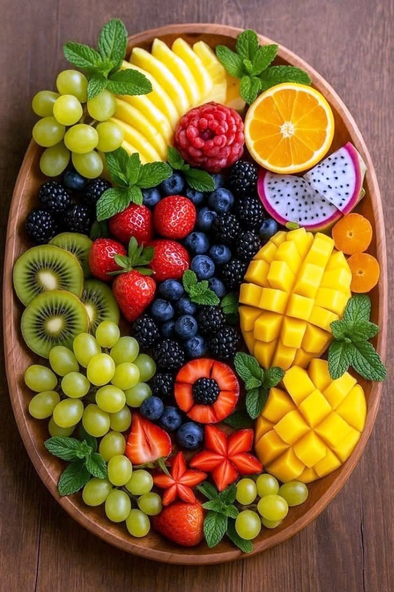
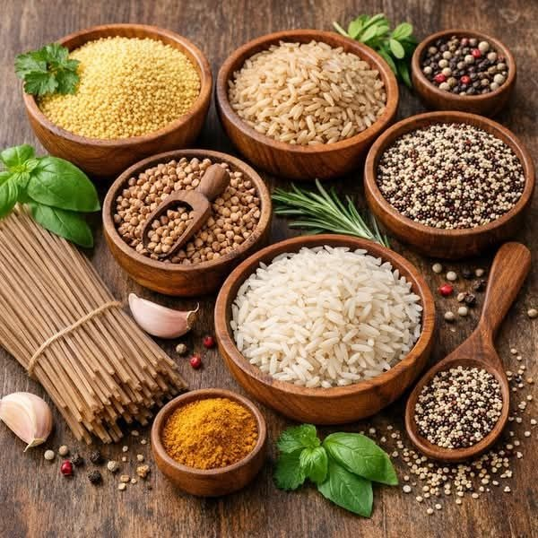
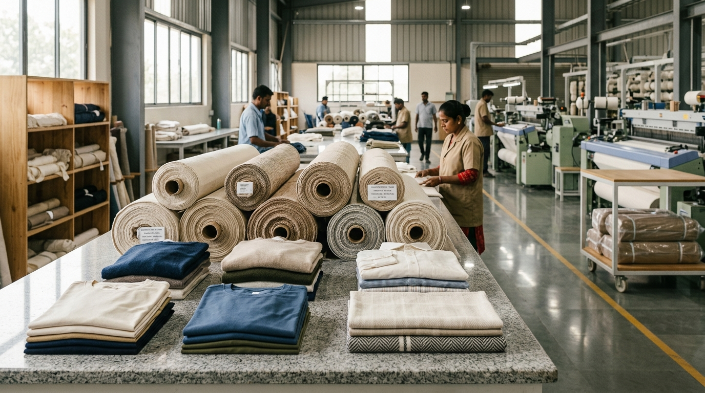
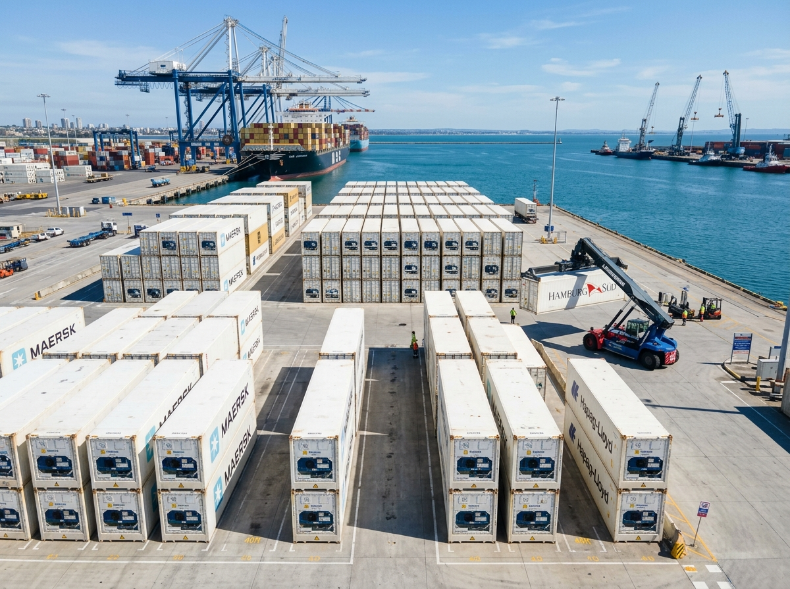
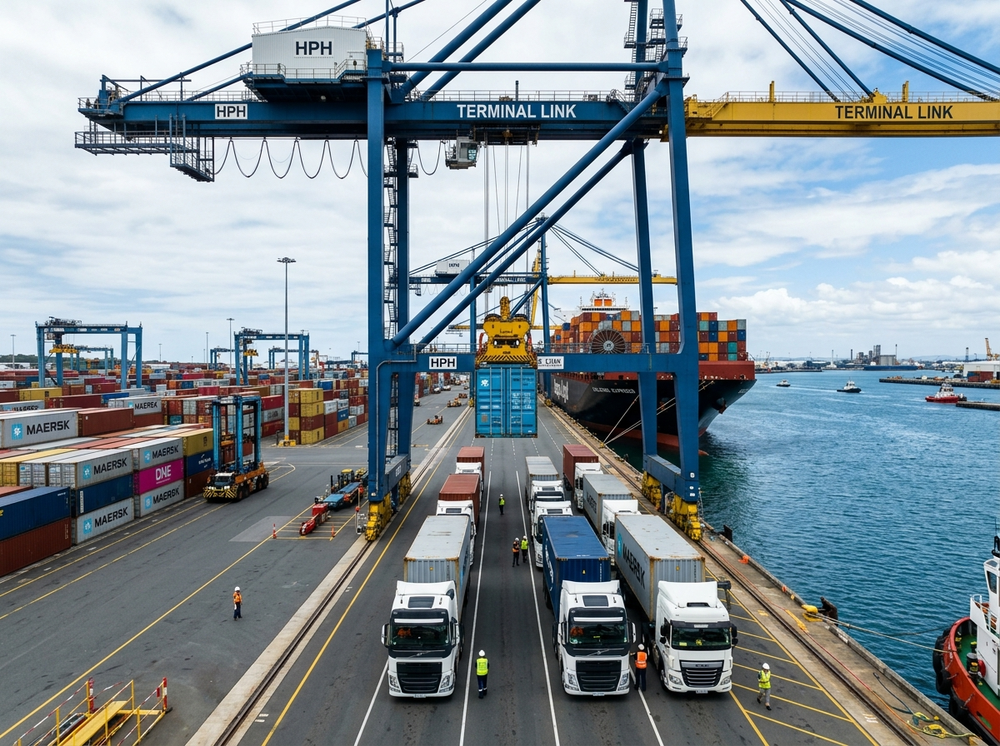
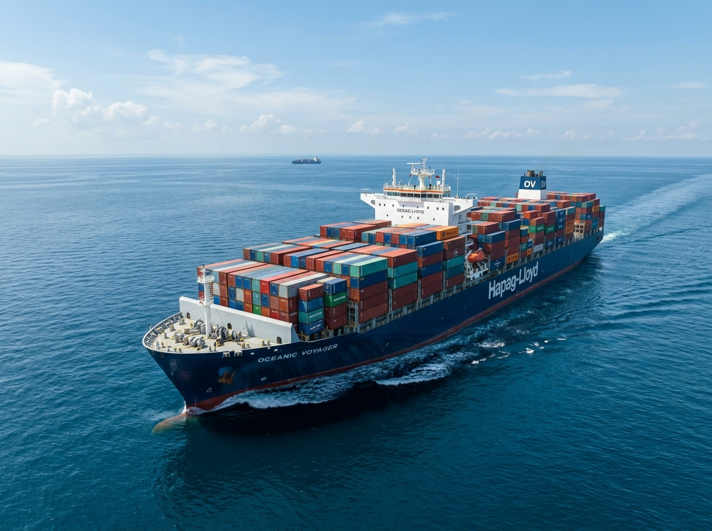

Trade Beyond Borders. Grow Without Limits.
Direct agricultural and industrial export corridors linking our sourcing centers in Dharapuram, Cochin, and Tuticorin to premier trade gateways across 50+ countries.
Hover or tap each specimen to expand its microclimate origin, harvest secrets, and direct ocean export telemetry.



From Sourcing to Shipment — trusted processes, uncompromised quality, global reach.
Building direct relationships with trusted growers across South India to ensure quality, traceability, and consistency from origin.

Quality checked at origin. Graded with precision. Delivered with confidence.

From farm gate to final destination, temperature-controlled logistics protect freshness, quality, and product integrity at every stage.

Managing customs, compliance, and documentation to keep every international shipment moving smoothly.
From farm-level sourcing to multimodal vessel delivery, explore how our vertically integrated operations eliminate risk and deliver predictable trade outcomes.
Direct contracts with 500+ verified growers in Dharapuram, Theni, and Western Ghats. Eliminating intermediaries ensures farm-fresh pricing, Sortex cleaning, and strict APEDA quality certification.
Continuous temperature-controlled reefer fleet with real-time GPS telemetry from farm packhouses to container vessel berths within 24 hours of harvest.
Dedicated container berthing slots and automated customs clearances at Cochin (Vallarpadam ICTT), Tuticorin, and Chennai ports with weekly direct liner sailings.
Full international certification compliance (Global GAP, FSSAI, US FDA, Halal, ISO 22000) with comprehensive laboratory pesticide residue testing for each container.
Four Pillars. One Standard of Excellence. Defining how we source, prepare, and deliver quality agricultural products to markets worldwide.
Direct partnerships. Trusted sources. Quality at origin.
Multi-point checks ensuring consistency and global compliance.
Export-ready packaging and end-to-end documentation support.
Reliable sea and air freight to 50+ countries with temperature-controlled logistics.
The foundational covenants that govern our agrarian provenance, master maritime voyages, and sovereign standards across every container departing Indian shores.
Hand-inspected at farm-gate, verified in cleanrooms, and certified at deep-water seaports. Uncompromised prestige delivered to every continent.
Direct alliances with 500+ agrarian cooperatives. Sourced from the richest fertile soils, pure by nature, untainted by middlemen.
Flawless cold-chain stewardship and dedicated deep-sea liner sailings safeguarding cargo integrity across every nautical mile.
Expedited diplomatic clearance, customs mastery, and direct port gateways linking South India to 50+ sovereign markets.
Shipyon sources, supplies, and delivers premium agricultural and industrial products across domestic and global markets.